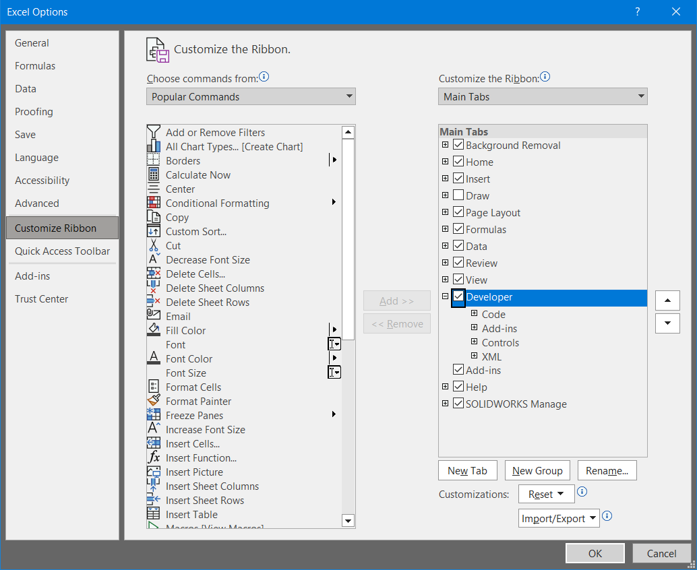

We begin with the following data in Excel Sheet1
Enable the Developer tab in the ribbon (File > Options > Customize Ribbon)
In the Developer tab, open the Visual Basic editor
Double click Sheet1, paste the code below into the editor and run it.
The code.
Sub CreateChart()
'Delete existing chart
If ActiveSheet.ChartObjects.Count > 0 Then
ActiveSheet.ChartObjects.Delete
End If
Dim cht As ChartObject
'Create a chart
Set cht = ActiveSheet.ChartObjects.Add( _
Left:=200, _
Width:=450, _
Top:=100, _
Height:=250)
'Determine the chart type
cht.Chart.ChartType = xlXYScatterLines
'Chart title
cht.Chart.HasTitle = True
cht.Chart.ChartTitle.Text = "Voltages vs Temperature"
'Give chart some data
cht.Chart.SeriesCollection.NewSeries
cht.Chart.SeriesCollection(1).XValues = ActiveSheet.Range("A2:A100")
cht.Chart.SeriesCollection(1).Values = ActiveSheet.Range("B2:B100")
cht.Chart.SeriesCollection(1).Name = ActiveSheet.Range("B1")
cht.Chart.SeriesCollection.NewSeries
cht.Chart.SeriesCollection(2).XValues = ActiveSheet.Range("A2:A100")
cht.Chart.SeriesCollection(2).Values = ActiveSheet.Range("C2:C100")
cht.Chart.SeriesCollection(2).Name = ActiveSheet.Range("C1")
'Axis titles
cht.Chart.Axes(xlCategory).HasTitle = True
cht.Chart.Axes(xlCategory).AxisTitle.Caption = ActiveSheet.Range("A1")
cht.Chart.Axes(xlValue).HasTitle = True
cht.Chart.Axes(xlValue).AxisTitle.Caption = "Voltage"
'Move the label
cht.Chart.Axes(xlValue).AxisTitle.Select
Selection.Left = 5
End Sub
You should end up with a chart like this. (I've added a button to run the code.)